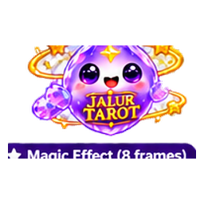
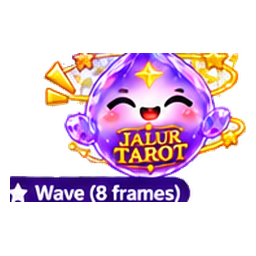
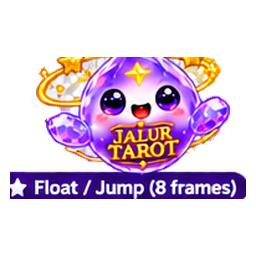

✦ JALUR TAROT ✦
Pernah merasakannya?
MENGAPA KAMU
TERTARIK PADA
YANG SULIT DIDAPAT?
Ada alasan psikologis di baliknya.

Pola pertama
PERHATIAN
YANG TAK KONSISTEN
Kadang dekat. Kadang menghilang.
INTERMITTENT REINFORCEMENT
Aku kangen
♥
Lalu menghilang…
Pola kedua
YANG SULIT DIDAPAT
TERASA LEBIH BERHARGA
Scarcity Effect
Ketidakpastian memancing rasa ingin memiliki.

Pola ketiga
APAKAH KAMU
MENCINTAI DIRINYA?
Atau sosok yang kamu bayangkan?
Tarot sebagai cermin refleksi
TIGA SIMBOL UNTUK DIRENUNGKAN
XV
THE DEVIL
XVIII
THE MOON
VI
SIX OF WANDS
Keterikatan dan obsesi
Berhenti sejenak
BENARKAH KAMU
MENGINGINKANNYA?
Atau kamu hanya ingin dipilih olehnya?
JAWAB DENGAN JUJUR PADA DIRIMU.
Sebuah ruang untuk mengenal diri
JALUR
TAROT
KENALI DIRI.
PAHAMI PERASAANMU.
TEMUKAN ARAHMU.
